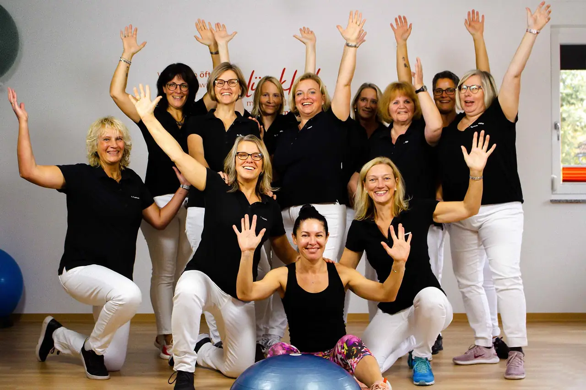

Physiotherapie und Osteopathie in Ispringen
Mit einem Lachen geht alles leichter.
Seit 1996 behandeln wir in der Bahnhofstraße: mit Rezept, ohne Rezept und im Kurs. Einen Termin bekommen Sie am schnellsten am Telefon.
07231 807 99Telefonisch erreichbar Mo–Fr 8–18 Uhr.
Angefangen hat alles mit einer Fernsehshow
Im Mai 1995 begleitete Michaela Grosse ihren Bruder Markus als Zuschauerin zur Show „Das goldene Ei“. Dort wurde sie aus dem Publikum als Kandidatin ausgewählt und gewann. Mit dem Gewinn erfüllte sie sich den Traum von der eigenen Praxis.
- 1996Eröffnung in der Ispringer Schulstraße. Ihre Mutter Doris Krieg übernimmt die Praxisorganisation.
- 2007Umzug in die Bahnhofstraße 4, ins ganze Untergeschoss.
- 2014Master of Science in Osteopathie an der Dresden International University.
- Heute16 Frauen, fünf Behandlungsräume, ein Trainings- und ein Gerätetherapieraum.

Unsere Leistungen

Mit Rezept
Ihre Ärztin oder Ihr Arzt verordnet, die Kasse zahlt bis auf die Zuzahlung.
- Krankengymnastik
- Sportphysiotherapie
- Medizinische Trainingstherapie (KGG)
- Manuelle Therapie
- Kiefergelenkstherapie (CMD)
- Bobath-Therapie für Erwachsene
- Schwindel- und Vestibulartherapie
- Neurophysiologische Behandlung (PNF)
- Manuelle Lymphdrainage
- Medizinische Massage
- Bindegewebsmassage
- Schlingentisch
- Wärmetherapie mit Fango
- Kryotherapie (Eistherapie)
- Elektrotherapie
- Hausbesuche


So finden Sie uns
Die Praxis liegt im Untergeschoss der Bahnhofstraße 4, ein paar Schritte vom Bahnhof Ispringen. Im Hof hinter dem Haus gibt es vier Parkplätze für Patienten, die Einfahrt ist rechts neben dem Eingang. Gegenüber vom Blumenladen können Sie 30 Minuten parken, an der Eisenbahnstraße ohne Zeitbegrenzung.
Am Eingang ist eine kleine Stufe. Wenn Sie dabei Hilfe brauchen, rufen Sie kurz vorher an, dann holen wir Sie ab.
| Montag | 07:00 – 20:30 Uhr |
|---|---|
| Dienstag | 07:30 – 19:00 Uhr |
| Mittwoch | 07:30 – 20:00 Uhr |
| Donnerstag | 08:00 – 19:00 Uhr |
| Freitag | 07:00 – 18:00 Uhr |
| Sa, So | geschlossen |